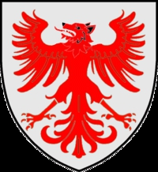

Dansk storman o hövding, Godsägare, Drots, Riddare. Blev högst 70 år.
1170 Kalundborg, Själland, Danmark.
före 1241 Ribe, Danmark.
Drots
Drots var ett medeltida och tidigmodernt nordiskt ämbete vars innehåll förändrades över tid. Förenklat kan man säga att den svenska drotsen hade uppgifter som motsvarade vad dagens justitieminister gör.
Ordet är belagt i fornsvenska som drotzet och forngutniska som drotseti, och betydde från början 'ekonomisk administratör, överhovmästare'. Etymologin är oklar, och ordet kan vara nordiskt eller inlånat från medellågtyska, och är i vilket fall som helst starkt påverkat av det senares druczate. Möjligen är ordet besläktat med drott.[1][2]